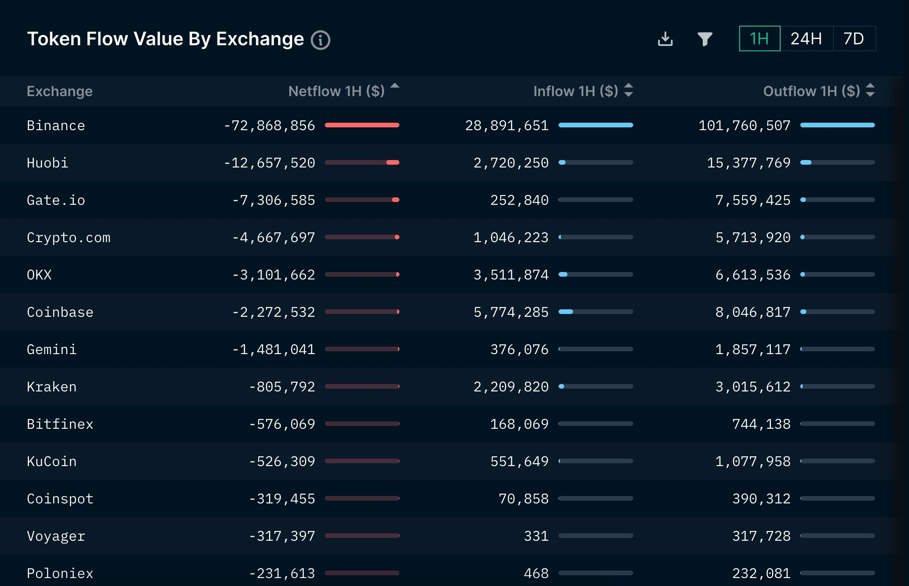
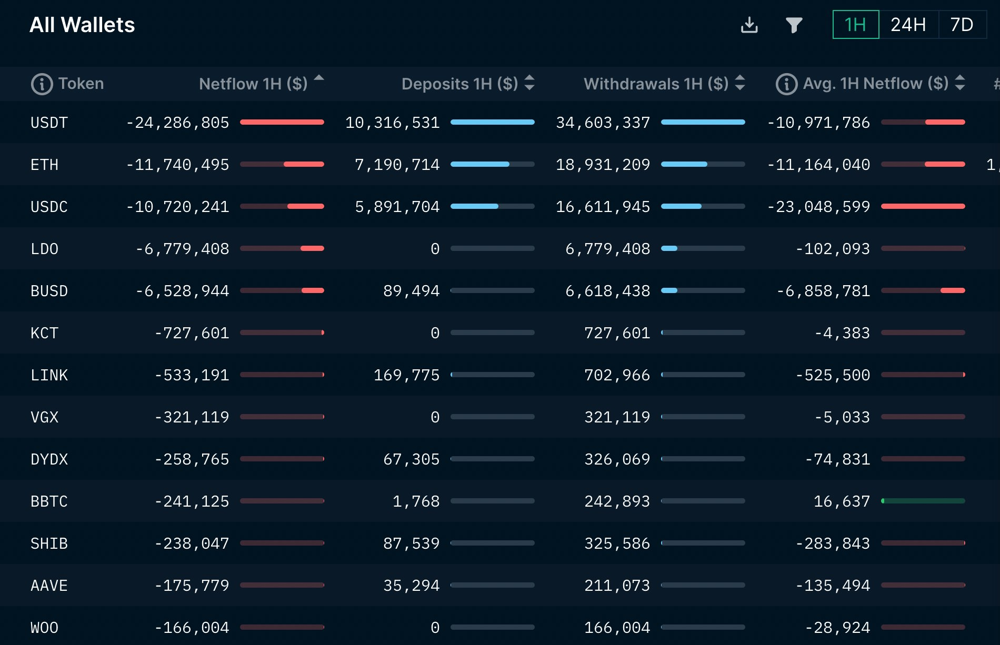
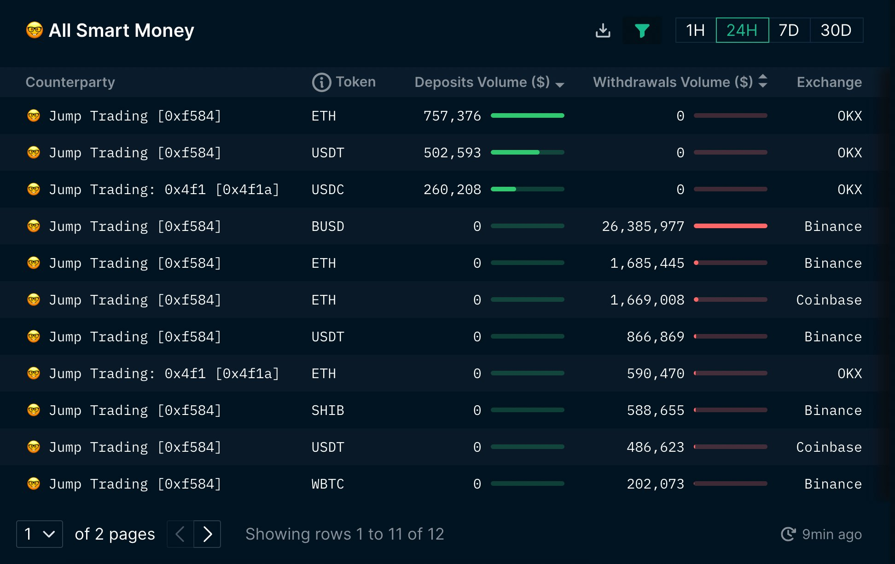
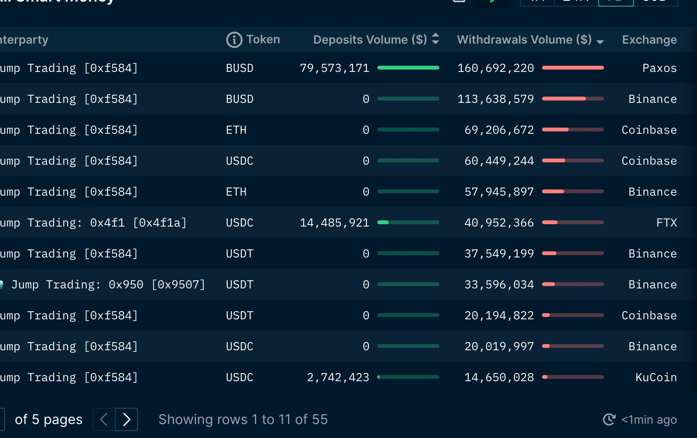
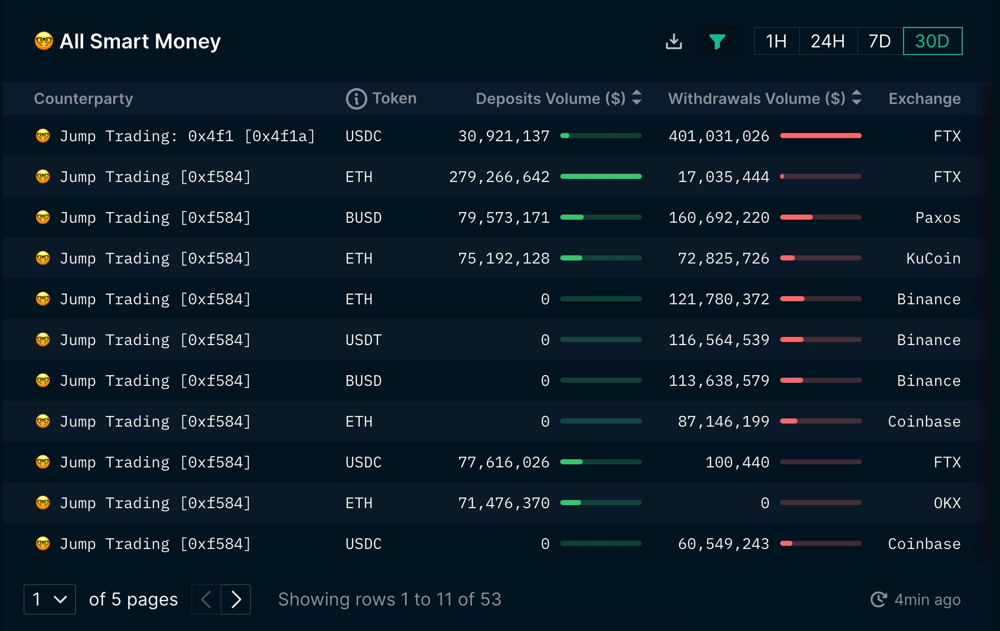

Nansen
Nansen專注於追蹤鏈上活動，以"為鏈上地址打標簽"而出名，其中最有名的標簽就是“smart money”--聰明錢。擁有聰明錢標簽的是加密世界中的精英們的錢包地址，他們的交易行為通常能帶來不菲的收益，其他交易者自然也想要跟隨他們的交易行為。
Nansen擁有很強的快速迭代能力，比如在NFT市場興起之後，快速推出了一係列NFT相關的產品服務，如NFT Paradise、 NFT God Mode、NFT Wallet Profiler等。
【主要功能】
Nansen提供的功能主要有portfolio、smart alerts、watchlist等。在Nansen的主界麵上，可以查看主要公鏈的宏觀數據、defi數據、穩定幣數據和NFT市場的基本情況，包括主要NFT的市值、地板價、成交量、成交額和持有錢包數等。

portfolio：Nansen的用戶可以使用錢包地址登錄他們的網站，登錄後，就可以在頁麵上查看錢包地址下所有的資產、交易記錄、資產分析等。

smart alerts：Nansen允許用戶訂閱智能警報，在他們訂閱的地址進行活動時他們會收到通知。
watchlist：用戶可以向watchlist中添加想要監測的錢包地址，來隨時監測該地址的動向。
目前Nansen提供一部分免費功能，但絕大部分功能需要付費使用，這也是nansen的主要收入來源。
【是否支持自定義數據】
目前Nansen提供的數據都是經過他們處理的，不支持用戶自定義的數據分析。由於他們麵向的主要是需要高可用數據的機構投資者，因此提供的數據基本都是已經建模處理過後的成品數據。
【覆蓋區塊鏈】
Nansen已經支持了包括 Layer 2 在內的41條公鏈上的數據。
【數據延遲】
分鐘級彆延遲。
【研報】
Nansen擁有一個由18名分析師組成的分析團隊，在他們網站的nansen research板塊中為用戶提供研報，研究的內容涵蓋了L1/L2, NFT, GAMING, DEFI和宏觀趨勢等。
https://pro.nansen.ai/
交易所資金流動狀況 https://pro.nansen.ai/exchange-flows/exchanges
https://portfolio.nansen.ai/dashboard/binance https://portfolio.nansen.ai/dashboard/okx https://portfolio.nansen.ai/dashboard/bybit https://portfolio.nansen.ai/dashboard/bitfinix
通知 slack , tele
作為一個hodler 熊市時我其實不太關注市場消息 這也導致此次FTX事件中後知後覺 被關廁所損失近40萬鎂
雖然主要資產是放在冷錢包中, 但這個損失還是不少 如果回到11/05, 是否有什麼確切證據可以知道FTX已經發生擠兌?
(板上的示警文章已看過, 有板友也因此得救, 但我想知道的是確實數據)
-
以前常用的例如 Whale Alert: https://twitter.com/whale_alert
能否事先看出來? 在搜尋列輸入過濾條件 ftx from:whale_alert since:2022-11-05 從11/05到寫這篇文章的期間只有30筆alert, 坦白說看不出什麼跡象
過濾條件: binance from:whale_alert since:2022-11-05 可以看到過去幾天有相當大額的#USDC burned (可能為提現)
實際來說, 一家交易所如果要避開whale alert的偵測, 只要切細成較小額度 就能辦到, 例如100M USD切成1M x 100, 就偵測不到 所以也許FTX原本就是都切成小額居多, 而幣安比較沒這樣做 無論如何, 用whale alert似乎不太靠譜
-
使用鏈上數據分析, 例如Nansen: https://pro.nansen.ai/
有七天試用期, 長期用要繳費, 另外它有twitter: https://twitter.com/nansen_ai
正在示警各穩定幣和ETH大量流出:
Exchange ETH & ERC20 tokens netflow in the last hour
Binance -$72.9M Huobi -$12.7M Gateio -$7.3M Cryptocom -$4.7M OKX -$3.1M
Bittrex +$771K Bitkub +$496K Paribu +$191K Bitpanda +$55K Probit +$51K
*ETH & ERC20 tokens only, from addresses that we have labeled

Most of the withdrawals/negative netflows are in
USDT -$24.3M ETH -$11.7M USDC -$10.7M LDO -$6.8M BUSD -$6.5M

過去7天交易所流出排行: https://twitter.com/nansen_ai/status/1591617986275966976/photo/1
Jump Trading in the last 24 hours:
Total withdrawals from exchanges: $32.5M
Total deposits: $1.5M
*ETH & ERC20 tokens only, from addresses that we have labeled

In the last 7 days:
Total withdrawals: $691M
Total deposits: $229M

過去30天交易所流出排行: https://twitter.com/nansen_ai/status/1591617991648890880/photo/1
In the last 30 days:
Total withdrawals: $1.5B
Total deposits: $750M

不意外的看到FTX流出42B, 但只回補了39B, 而幣安則流出45B 此外鏈新聞在11/07示警FTX流出大量穩定幣也是採用nansen的數據: https://abmedia.io/20221107-ftx-stable-coin-outflow
用戶避風頭？FTX穩定幣發生大量提幣，幣安流入超過3億！ | 鏈新聞 ABMedia
[資產機構 Alameda Research 的資產結構疑雲事件在近期引起不少討論，甚至引起 FTX 及幣安執行長的網路論戰、籌碼較勁。若從鏈上數據角度出發，可發現此事件已對 FTX 用戶造成影響並引發大量提幣，使數億美元的穩定幣從 FTX 流出。 ...

但這篇新聞的圖表並非來自twitter, 且它還列出各家交易所穩定幣餘額 並示警FTX在11/07時就只剩261M美金的穩定幣了
看來使用Nansen是可以看得出來, 前提是付費使用者以及有習慣看圖表
-
追蹤名人的推特: 除了以上提到的以外, CZ呀、kraken官方..等等的也許能得到警訊
-
查看交易所列出的錢包: 在這個恐慌期中, 各家交易所又想起了PoR的重要性, 但這也不是能短時間做好的, 以幣安為例, 就先給出了它的冷熱錢包: https://reurl.cc/LXMAmy
其中BUSD和BNB先不用管, 專注看它的BTC, ETH, 和USDC錢包即可
這三種錢包加總約有十幾B美金的價值, 但別忘了FTX光11/08單日就被提款50B 如果爆發恐慌擠兌, 以幣安市佔為FTX 4倍來估算, 這點錢應該是瞬間就空了
實際動作： 鑒於FTX的爆炸, 我開始轉出除了kraken以外交易所裡的資產 BTC和ETH直接打入冷錢包, 其餘小幣都賣成穩定幣 以幣安來說就是都賣成BUSD, 然後走erc20匯出成USDC
如果很多人也正在跟我做一樣的事, 則BTC和ETH相對抗跌 也不排除有人是賣小幣買成ETH存冷錢包的 而其他幣無可避免要先崩一波了